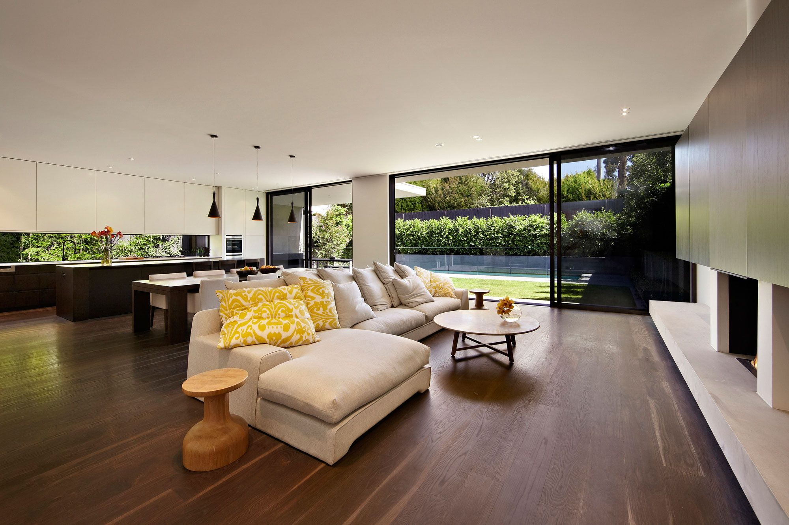
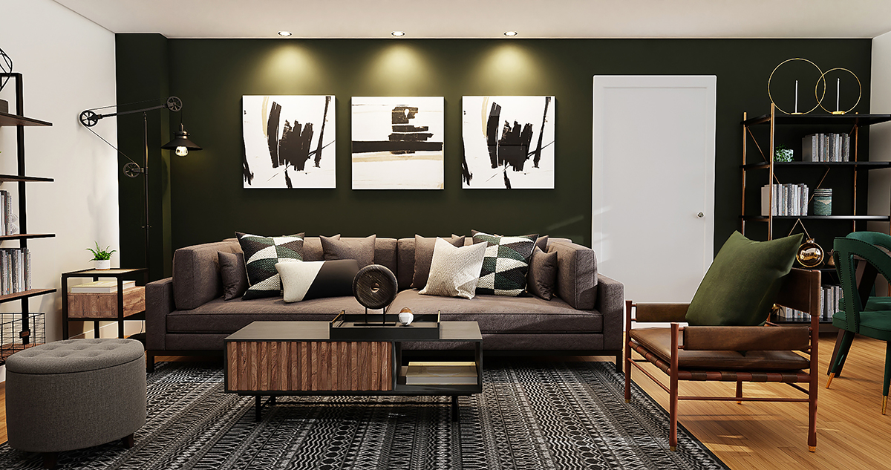
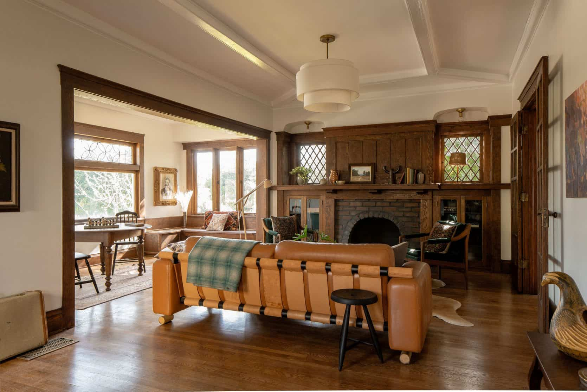

<div id="carouselExampleIndicators" class="carousel slide" data-bs-ride="carousel">
    <div class="carousel-inner">
        <div class="carousel-item active">
            
        </div>
        <div class="carousel-item">
            
        </div>
        <div class="carousel-item">
            
        </div>
        <div class="carousel-item">
            
        </div>
        <!-- Add more carousel items as needed -->
    </div>
    <button class="carousel-control-prev" type="button" data-bs-target="#carouselExampleIndicators"
        data-bs-slide="prev">
        <span class="carousel-control-prev-icon" aria-hidden="true"></span>
        <span class="visually-hidden">Previous</span>
    </button>
    <button class="carousel-control-next" type="button" data-bs-target="#carouselExampleIndicators"
        data-bs-slide="next">
        <span class="carousel-control-next-icon" aria-hidden="true"></span>
        <span class="visually-hidden">Next</span>
    </button>
</div>
<!-- </div> -->
<!-- <app-footer></app-footer> -->
<app-home-history></app-home-history>
